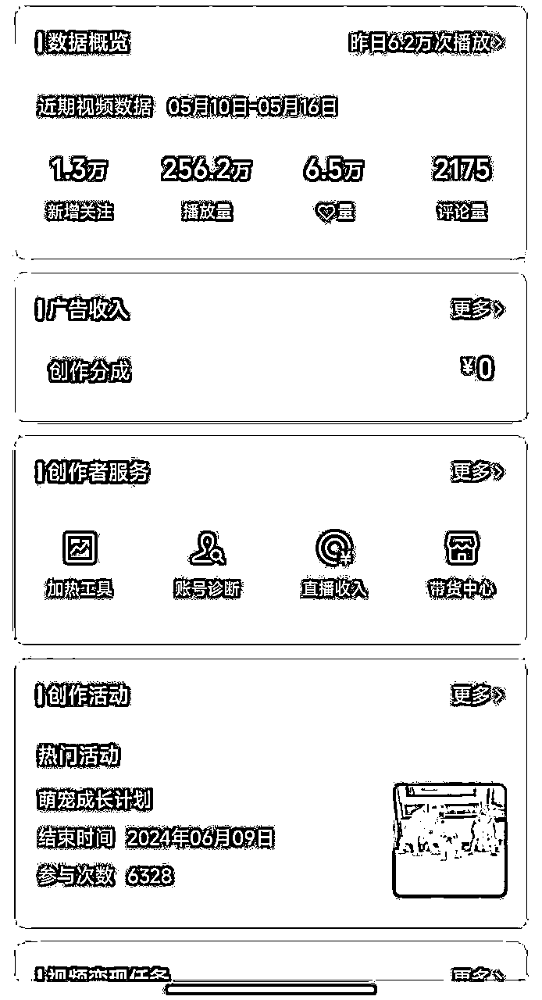

来源：https://wpzqvl5zm0.feishu.cn/docx/QhDMdBLscoFnoBxTr5Ic1Ve7nQd
大家好，我是谢奇遇，国企打工人，四年副业实践经验。曾经做过闲鱼无货源、实体家具、小红书珠宝定制引流、TikTok带货（合伙变现40W）、抖音中老年养生短视频/图文带货（个人收益20W+），喜欢拆解研究主流副业项目。
4月28日，我在社群上看到关于小红书数字人引流变现的信息分享。抱着好奇的心态，我立马去搜了小红书、抖音、视频号关于数字人当下的变现玩法，最终选定了AI数字人视频号带货。从5月4日开干算起，历时两周，单号跑出了两条百万播放流量视频，带货佣金1700+，成功跑通流程。

本次分享不仅是项目本身，更多的是自己对待项目的思考行动的复盘总结。两者结合，希望能对你产生一点帮助，也欢迎一起共同探讨交流。
那么，接下来正式进入主题。
在看到社群圈友分享的时候，我的第一反应是：去年数字人带货案例已经火爆全网了，现在还有机会吗？本着“没有调查就没有发言权”的原则，我在小红书、抖音、视频号、快手都搜索了数字人的最新变现手法。
可以看到，小红书倾向于用带货变现截图以及发布数字人平台钩子引流成交；抖音、视频号、快手倾向于制作数字人起号带货。
再结合小红书评论区需求、抖视快同行账号近期橱窗出单数据反馈来看，目前入局AI数字人仍然存在很大机会。并且，在视频号上的账号数据以及出单情况表现会更好一些。同时，我发现现在同行发布的数字人作品，人物表现程度都远比之前做的Heygen数字人要逼真得多。通过在小红书、社群、包括闲鱼搜索“AI数字人带货、数字人平台”等关键词筛选，以及私聊请教好友之后，最后找到一个叫做飞影数字人的制作平台。
借助拆解同行可知，现在的AI数字人带货玩法，就是通过数字人制作平台克隆外国人脸，结合爆款文案配音剪辑，来代替真人出镜口播，实现起号带货。
特别说明：以下数字人克隆人脸剪辑制作仅为演示用途，请遵守法律法规，勿滥用技术。
本次演示涉及的相关工具软件：
飞影数字人：PC端网址https://flyworks.ai/（手机端在微信小程序搜索飞影数字人）
配音神器（付费）：电脑端/手机微信小程序获取
IDM下载器（PC端安装）：链接：https://pan.baidu.com/s/1WgwexQqDe3xwqGTJFLmIyQ 提取码：wljg
格式工厂（PC端）：http://www.pcfreetime.com/formatfactory/CN/index.html
创作猫（手机端）
剪映
记住一句话，同行就是最好的老师。因为我做的是带货账号，所以在定位方面，结合同行账号类型、橱窗出单情况进行确定即可。这次我做的是育儿类型，因此我的账号装修都是参照模仿抖音育儿类同行来做。
确定好账号定位后，那么接下来就是要获取对应的爆款文案以及合适的外国人脸进行合成制作。
以育儿赛道为例，爆款文案来源很多，例如AI数字人同行、育儿博主、育儿百科账号，都可以找到非常多的高赞视频内容。我对爆款文案的选择主要有两点：首选同行账号一周内的破1000赞视频，一般来说这种文案比较新，烂大街的几率比较小，有成为爆款文案的潜质；其次是选择同行账号的万赞视频，这种爆款文案就非常适合拿来用于起号打标签。
因为数字人制作是需要用到文案/音频驱动，所以我们可以通过配音神器的短视频链接以及音视频文件提取文案；或者可以通过安装IDM浏览器插件一键下载、亨亨猫去水印软件（付费）多链接批量下载视频，然后将下载好的视频直接导入格式工厂批量提取音频即可。
搞定了爆款文案，最重要的还要搞定外国人脸。决定素材是否快速起飞，一张合适的人脸很重要。举例，假设你做的是年轻女性情感方向，那么年轻知性的男生/女生人脸就相对合适；假设你做的是认知智慧方向，那么中老年教授类型的人脸就相对合适。
因为我做的是育儿方向，通过参考同行素材，我优先找的是知性女性人脸。获取人脸素材我采用2个途径，一个是B站，一个是油管。在B站上，搜索“国外心理访谈”、“国外育儿访谈”、“育儿访谈”之类的关键词，去筛选出来合适的人物素材。然后，又可以通过B站素材上面的关键词，在油管上顺藤摸瓜，找出更多的人物素材。在油管上也可以直接搜索podcast、interview关键词，有很多优质人物素材可以参考。（由于不可描述的原因，油管操作请自行搜索解决）
务必注意的是，找到合适的素材后，一定要再次搜索人名概况，不要使用任何名人、明星素材！另外最好采用视频AI换脸，形成新的形象，避免侵权风险。
找到合适的人物素材，先用去水印工具将视频下载好，再导入剪映。然后，将无关人物的镜头画面（如图箭头所示）剪掉，剪出1分钟左右的完整无遮挡的数字人分身视频源。
接着，打开飞影数字人网站，上传剪好的数字人分身视频源进行复刻。注意，每一个账号可以免费复刻5个数字分身。
待数字分身生成后，点击复刻好的数字分身，进行文本驱动/音频驱动进行创作，同时也可以选择克隆一个合适的声音作为统一声源。目前该网站新注册一个账号赠送500积分（10积分/秒），可以制作70秒的素材。我们可以通过邀请手机号注册新用户来获取更多积分（邀请成功，新号赠送500积分，老号赠送100积分）来制作素材，或者选择氪金会员获得更多积分权益。
这里分享一个免费获取更多积分的思路：还记得上面我说的同行在小红书发布数字人平台钩子引流的案例吗？参考同行的做法，自行制作一个外国人介绍平台的小视频，或者截图同行的作品数据，做成笔记，用操作教程作为免费资料引流，让用户走你的邀请链接注册，假设用户充值了会员，你也会有一定的积分赠送。并且用户留在你的微信里头，后续还有转化的可能。
作品制作完成后，在作品管理页面下载视频，再导入剪映制作即可。
手机端操作同理，可用创作猫APP进行链接转文字、再用微信小程序搜索飞影数字人，登录制作，最后将视频导入剪映剪辑。
将平台成品导入剪映后，选择智能识别字幕并微调错别字，再添加标题，加入文本模板、滤镜、画质调节，纯文案驱动的作品需要添加合适的背景纯音乐，一条标准的成品就制作完成了。如果想要更精细化，还可以加入与文案有关联的画中画素材，一来可以提升原创程度，二来可以让整体观感更好。
简易版成品展示如下：
在完成一个完整的操作流程之后，为了让素材得到高效调取使用，可以搭建了一个简易版的项目库，将每一步所需要用到的素材，归类整理，提升效率，方便给多号复制使用。
由于我重点做的是视频号，当账号发布流量视频涨了有1000粉以后，就可以在我的视频号-创作者中心-带货中心-保证金入口充值100块保证金开通带货权限。在选品中心选择合适的商品加入橱窗带货。
在带货环节，其实做法跟起号的逻辑基本一致。以育儿账号书单变现为例，查看对标同行带货的产品，提前在选品中心搜索并加入橱窗，有一些产品公开佣金比例很低，则需要在选品后台联系商家，提供视频号ID进行定向调佣。
文案方面，依然是采用链接转文字、去水印下载视频转文字的方式获取文案。考虑到数字人制作时长控制以及原文案提到的不同账号昵称等因素，我们可以二创文案内容，再导入数字人制作平台进行文本驱动。
与流量视频不同的是，在制作带货视频的时候，我们要在合适的位置插入产品素材。同样的，产品素材可以在抖音上搜索关键词，通过IDM插件下载、批量复制链接在亨亨猫去水印中提取视频，然后截取无文字遮挡的产品介绍片段。
最后做好视频成品，在视频号发布页面点击链接或商品-商品挂上对应产品链接即可。
以上，就是我快速跑通AI数字人带货的全流程。基于AI数字人的技术，可以延伸出多种变现思路，例如：
1、克隆自己，做真人/直播/口播IP/带货。只需要搞定文案，就可以通过驱动出镜原素材快速产生多条口播视频，满足日常发布视频、不间断数字人直播需求，实现降本增效。这一点对于社恐/不擅长口播的人来说特别友好。
2、提供定制化服务。参考小红书的数字人引流案例，通过制作数字人讲解笔记实现引流，给企业、商家、个人提供数字人个性化定制服务完成变现。
3、制作课程，完成私域变现。打造知识付费产品，如AI数字人社群、训练营、私教陪跑服务等形式，完成变现。
另外，支持我快速跑通这个项目，离不开以下四点思维，在这里分享给大家：
1、保持好奇，保持敏锐。我们身边每天都充斥着大量信息，但是信息壁垒却很严重。很多有价值的信息，赚钱的答案就摆在我们面前，我们却不知道。所以，对于平台、社群、微信群的异常值信息，一定要保持好奇心，保持敏锐度。如果不是因为好奇心使然，我也不会在看到圈友分享后，就去各平台搜索数字人引流、带货的相关信息，然后入局拿到结果。
2、抓住机会，干了再说。经历了去年中老年赛道3个月10W+佣金的高光时刻以及后续的违规潮导致0收益以后，我就决心着接下来一定要做长期且稳定的项目。于是在去年底至今年初，我又开始付费加入不同的项目/社群。但是逐渐地我变得越来越眼高手低，越来越浅尝辄止，原因是我发现没有一个是我眼中的“好项目”，同时整个人也越来越焦虑。直到某一刻，我发现自己这种“光看不行动”，“寻找完美项目”的行为纯粹是浪费时间。因为我回顾这些年做的项目经历，其实并不是说自己能力有多强，更多的是跟上了平台红利。而且，每一个项目都不可能是完美的，一定是优缺点并存，风险与收益并存。
所以，兜兜转转还是回到这句话：想都是问题，做都是答案。遇到有机会的情况下，干了再说，反正成本不大。
3、迭代思维，不断优化。由于自己之前一直做短视频带货比较多，所以矩阵思维很严重。切入新赛道很容易就想批量做视频，批量起号，批量带货，用数量博概率。当我前期看了这个AI数字人同行账号以后，看到双语字幕，视频时长、精致的人物制作以后，心想着这也太耗时了吧？怎么才能高效批量做出这些视频？还没开始做几条，自己反而一下子被自我设想的完美主义限制了。好在好友的及时提醒：不要想着一步到位，先完成，再完美。先做出一条视频，先做好一个号，再慢慢加量，这样就没有什么压力。心态放松了，动作才不会变形。
4、独行者疾，众行者远。一个人走路可以走得很快，一群人走路可以走得很远。对于副业实践四年的我来说，我很清楚个体的力量非常有限。对于这个项目来说，技术信息差终将会被磨平，但是这个AI数字人项目，不仅限于带货，还可以延伸出许多玩法，想象空间很大。所以当我跑通了这个项目，分享交流碰撞出更多玩法思路，并且能够帮助一部分人赚到钱的话，这会远比自己闷头干更加有意义。
以上是我对AI数字人视频号带货的实操复盘分享，希望能给圈友提供一点经验参考，感谢你的阅读！